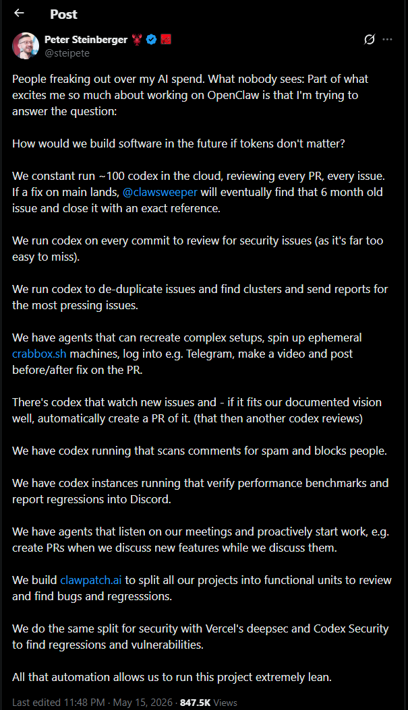

<!--
  scene-01-hook.html — Cold-open hook (30.8s).

  Triple-stat slam ("ONE DEV." / "100 AI AGENTS." / "ZERO JUNIOR PR REVIEWERS.")
  followed by a tweet-preview receipt card and a "847,000 viewers" stat chip.

  Word anchors (composition-time = scene-internal time, scene starts at 0):
    0.035  "One"
    1.126  "hundred" (AI agents)
    5.166  "Zero"
    8.289  "Peter Steinberger"
    13.003 "this week"
-->
<template id="scene-01-hook-template">
  <div data-composition-id="scene-01-hook"
       data-start="0"
       data-width="1920"
       data-height="1080"
       style="position:absolute; inset:0; overflow:hidden;
              font-family: 'Inter', system-ui, sans-serif; color:var(--text);">

    <style>
      /* LEFT-HALF content — triple-stat slam + overline + views chip.
         Constrained to left 1100px so it never bumps into the right-side
         X-post screenshot (which lives at x≈1180..1880). */
      #s01-content {
        position:absolute;
        top:0; left:0;
        width: 1100px;
        height:100%;
        padding: var(--pad-top) 60px var(--pad-bottom) 80px;
        display:flex; flex-direction:column;
        align-items:flex-start; justify-content:center;
        text-align:left; gap: 18px;
        box-sizing:border-box;
      }
      #s01-overline {
        font-family: 'JetBrains Mono', ui-monospace, monospace;
        font-weight: 700;
        font-size: 24px;
        letter-spacing: 5px;
        text-transform: uppercase;
        color: var(--accent-1);
      }
      .s01-slam {
        font-family: 'Inter', system-ui, sans-serif;
        font-weight: 900;
        font-size: 124px;
        line-height: 0.94;
        letter-spacing: -3px;
        color: var(--text);
        text-shadow: 0 8px 32px rgba(0, 0, 0, 0.65);
      }
      .s01-slam.crab { color: var(--accent-1); text-shadow: 0 0 60px rgba(201, 42, 42, 0.45), 0 8px 32px rgba(0, 0, 0, 0.65); }
      .s01-slam.amber { color: var(--accent-stat); text-shadow: 0 0 50px rgba(252, 211, 77, 0.45), 0 8px 32px rgba(0, 0, 0, 0.65); }
      #s01-slam-3.s01-slam {
        font-size: 86px;
        line-height: 1.0;
      }
      .s01-mark-wrap {
        position: relative;
        display: inline-block;
      }
      #s01-mark-bar {
        position: absolute;
        left: 0; right: 0;
        bottom: -8px;
        height: 7px;
        background: var(--accent-1);
        border-radius: 4px;
        transform-origin: left center;
        transform: scaleX(0);
      }
      #s01-views-chip {
        display:inline-flex; align-items:baseline; gap: 10px;
        padding: 14px 26px;
        margin-top: 18px;
        border-radius: 14px;
        background: linear-gradient(135deg, rgba(34, 211, 238, 0.16) 0%, rgba(34, 211, 238, 0.04) 100%);
        border: 1.5px solid rgba(34, 211, 238, 0.55);
        font-family: 'JetBrains Mono', ui-monospace, monospace;
      }
      #s01-views-chip .num {
        font-family: 'Inter', system-ui, sans-serif;
        font-weight: 900;
        font-size: 44px;
        color: var(--accent-2);
        letter-spacing: -1px;
        font-variant-numeric: tabular-nums;
      }
      #s01-views-chip .label {
        font-weight: 700;
        font-size: 16px;
        letter-spacing: 2px;
        text-transform: uppercase;
        color: var(--text-secondary);
      }
      #s01-replies-chip {
        display:inline-flex; align-items:baseline; gap: 10px;
        padding: 12px 22px;
        margin-top: 6px;
        border-radius: 14px;
        background: linear-gradient(135deg, rgba(252, 211, 77, 0.14) 0%, rgba(252, 211, 77, 0.03) 100%);
        border: 1.5px solid rgba(252, 211, 77, 0.45);
        font-family: 'JetBrains Mono', ui-monospace, monospace;
      }
      #s01-replies-chip .num {
        font-family: 'Inter', system-ui, sans-serif;
        font-weight: 900;
        font-size: 32px;
        color: var(--accent-stat);
        letter-spacing: -0.5px;
        font-variant-numeric: tabular-nums;
      }
      #s01-replies-chip .label {
        font-weight: 700;
        font-size: 16px;
        letter-spacing: 2px;
        text-transform: uppercase;
        color: var(--text-secondary);
      }
      #s01-mark-slam-3-bar {
        position: absolute;
        left: 0; right: 0;
        bottom: -8px;
        height: 6px;
        background: var(--accent-stat);
        border-radius: 3px;
        transform-origin: left center;
        transform: scaleX(0);
      }

      /* RIGHT-SIDE X-post screenshot — real receipt of the viral post.
         Source: assets/steipete-x-post.png (605x1054 portrait, 73 KB).
         Positioned right of the stat slam, framed in subtle crab-red border
         to live in the claw palette. */
      #s01-x-post {
        position: absolute;
        top: 80px;
        right: 60px;
        width: 580px;
        height: auto;
        max-height: 920px;
        border-radius: 16px;
        box-shadow:
          0 30px 80px rgba(0, 0, 0, 0.55),
          0 0 0 1px rgba(201, 42, 42, 0.35),
          0 0 60px rgba(201, 42, 42, 0.18);
        object-fit: contain;
        display: block;
      }
    </style>

    <div id="s01-content">
      <div id="s01-overline">A REACTION &middot; 2026-05-15</div>
      <div class="s01-slam crab"  id="s01-slam-1">ONE DEV.</div>
      <div class="s01-slam"       id="s01-slam-2">100 AI AGENTS.</div>
      <div class="s01-slam amber" id="s01-slam-3">
        <span class="s01-mark-wrap">ZERO<span id="s01-mark-bar"></span></span>
        <span class="s01-mark-wrap" style="position:relative;">JUNIOR PR REVIEWERS.<span id="s01-mark-slam-3-bar"></span></span>
      </div>

      <div id="s01-views-chip">
        <span class="num">847K</span>
        <span class="label">views &middot; @steipete</span>
      </div>
      <div id="s01-replies-chip">
        <span class="num">5</span>
        <span class="label">reply camps &middot; bill debate</span>
      </div>
    </div>

    <!-- Real X-post screenshot — right half of canvas, persists through full scene -->
    

    <script src="https://cdn.jsdelivr.net/npm/gsap@3.14.2/dist/gsap.min.js"></script>
    <script>
      window.__timelines = window.__timelines || {};
      (function(){
        const tl = gsap.timeline({ paused: true, defaults: { ease: "power3.out" } });

        // Hide everything from frame 0 — explicit hidden-until-reveal
        tl.set("#s01-overline",       { opacity: 0, y: 16 }, 0);
        tl.set("#s01-slam-1",         { opacity: 0, y: 40, scale: 0.94 }, 0);
        tl.set("#s01-slam-2",         { opacity: 0, y: 40, scale: 0.94 }, 0);
        tl.set("#s01-slam-3",         { opacity: 0, y: 40, scale: 0.94 }, 0);
        tl.set("#s01-views-chip",     { opacity: 0, y: 30, scale: 0.92 }, 0);
        tl.set("#s01-replies-chip",   { opacity: 0, y: 30, scale: 0.92 }, 0);
        tl.set("#s01-mark-bar",       { scaleX: 0 }, 0);
        tl.set("#s01-mark-slam-3-bar", { scaleX: 0 }, 0);
        tl.set("#s01-x-post",         { opacity: 0, x: 80, scale: 0.96 }, 0);

        // Overline — drift in immediately, before the first word lands
        tl.to("#s01-overline", { opacity: 1, y: 0, duration: 0.5 }, 0);

        // Slam #1 — "ONE DEV." at word 'One' (t=0.035)
        tl.to("#s01-slam-1", { opacity: 1, y: 0, scale: 1, duration: 0.55, ease: "back.out(1.7)" }, 0.1);

        // X-post screenshot enters early — slide-in from right at t=0.4
        // so the viewer sees the receipt while "One developer" lands
        tl.to("#s01-x-post", { opacity: 1, x: 0, scale: 1, duration: 0.7, ease: "back.out(1.5)" }, 0.4);

        // Slam #2 — "100 AI AGENTS." aligned with word 'hundred' (t=1.126)
        tl.to("#s01-slam-2", { opacity: 1, y: 0, scale: 1, duration: 0.55, ease: "back.out(1.7)" }, 1.1);

        // Slam #3 — "ZERO JUNIOR PR REVIEWERS." aligned with word 'Zero' (t=5.166)
        tl.to("#s01-slam-3", { opacity: 1, y: 0, scale: 1, duration: 0.6, ease: "back.out(1.7)" }, 5.1);

        // Marker underline sweep under "ZERO" — pivot-word emphasis
        tl.to("#s01-mark-bar", { scaleX: 1, duration: 0.5, ease: "power2.out" }, 5.9);

        // Views chip — slides in at "Peter Steinberger" word ~t=8.29
        tl.to("#s01-views-chip", { opacity: 1, y: 0, scale: 1, duration: 0.6, ease: "back.out(1.5)" }, 8.0);

        // Subtle scale pulse on 847K when "847" is spoken (~t=10.5)
        tl.to("#s01-views-chip", { scale: 1.06, duration: 0.4, ease: "sine.inOut", yoyo: true, repeat: 1 }, 10.4);

        // Visual-pacing beats — real-content reveals paced to narration after t=10.4
        // X-post screenshot gets a subtle glow pulse at "this week" (t≈13.0)
        tl.to("#s01-x-post", { boxShadow:
          "0 30px 80px rgba(0,0,0,.55), 0 0 0 1px rgba(201,42,42,.55), 0 0 80px rgba(201,42,42,.32)",
          duration: 0.5, yoyo: true, repeat: 1 }, 14.5);

        // REAL CONTENT BEAT — marker sweep under "JUNIOR PR REVIEWERS"
        // anchored to narration "Every pull request, every issue" @ ~18.3s
        // (visually re-emphasizes the slam-3 line during the matching narration)
        tl.to("#s01-mark-slam-3-bar", { scaleX: 1, duration: 0.6, ease: "power2.out" }, 18.5);

        // REAL CONTENT BEAT — replies camps chip enters at
        // "People started freaking out about the bill" @ 22.07s
        // Sourced: brief Section 2 — community split into ~5 camps over the AI spend
        tl.to("#s01-replies-chip", { opacity: 1, y: 0, scale: 1, duration: 0.55, ease: "back.out(1.5)" }, 22.0);

        // Small subtle re-emphasis on x-post when narration says "something different" (t≈25.0)
        tl.to("#s01-x-post", { scale: 1.02, duration: 0.5, ease: "sine.inOut", yoyo: true, repeat: 1 }, 25.0);

        // Pad timeline to scene duration so the scrubber sees a non-zero length
        tl.set({}, {}, 30.8);

        window.__timelines["scene-01-hook"] = tl;
      })();
    </script>
  </div>
</template>
